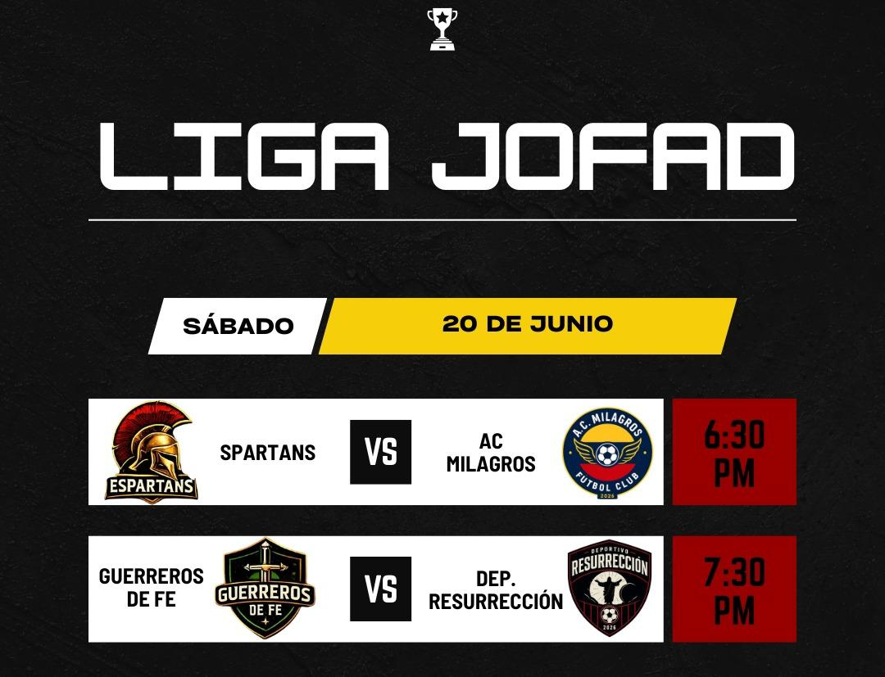

Pasión, competencia y valores dentro de la cancha.
Entrega y compromiso en cada jornada.
La fe y el esfuerzo dentro del terreno de juego.
Competencia y pasión en cada encuentro.
Disciplina, fuerza y espíritu deportivo.
Jugando con valores dentro y fuera de la cancha.